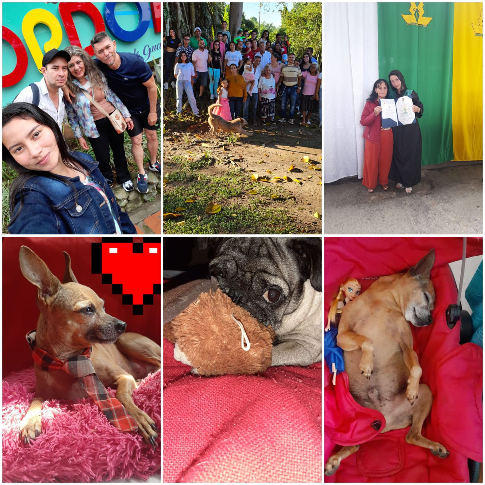

Mi tiempo libre

 Me gusta pasar tiempo disfrutando en familia, con mis mascotas, aveces en deportes, juegos y amigos. El tiempo libre es una de las cosas que más me gustan, ya que muchas veces no hago nada de lo mencionado, sino que salgo a fuera y me pongo apreciar las zonas verdes o bueno muchas veces solo me acuesto y escucho musica.
- Me gusta transmitir siempre mi lado positivo.
- No me gusta que hablen a mis espaldas .
- Me gusta ser amable.
- NO me gusta llevarme mal con alguien .